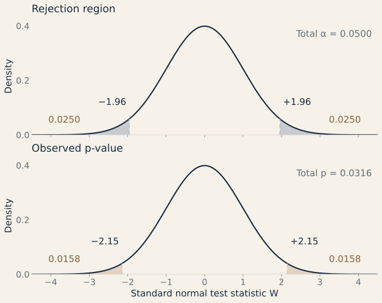
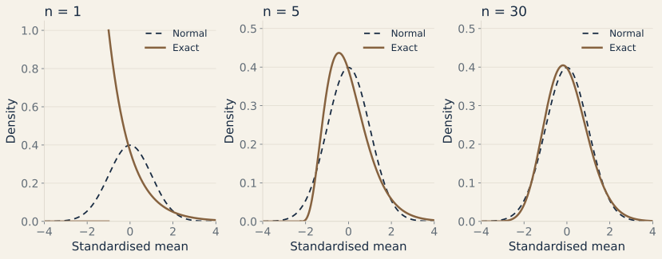

Parametric Inference & Hypothesis Testing
Estimator properties, bias and Bessel's sample variance correction, Chebyshev consistency, Method of Moments and Maximum Likelihood, Central Limit Theorem asymptotics, and Wald hypothesis testing.
Properties of Estimators: Bias, Consistency & Efficiency
Let $X_1, X_2, \dots, X_n$ be an i.i.d. sample from a population characterized by an unknown parameter $\theta \in \Theta$. A point estimator $\hat{\theta} = g(X_1, \dots, X_n)$ is a statistic whose performance is evaluated by three primary criteria:
Unbiasedness
$$\mathbb{E}[\hat{\theta}] = \theta$$ The average value of the estimator across repeated samples equals the true parameter.
Consistency
$$\hat{\theta}_n \xrightarrow{p} \theta \text{ as } n \to \infty$$ The estimator converges in probability to the truth as sample size increases.
Precision & Mean Squared Error
$$\text{MSE} = \text{Var}(\hat{\theta}) + \text{Bias}^2$$ MSE measures estimation error; among unbiased estimators, comparing MSE is equivalent to comparing variance.
Consider the uncorrected plug-in estimator of population variance (also the maximum likelihood estimator for an i.i.d. normal sample with unknown mean) $\sigma^2$: $$\hat{\sigma}^2_{\text{ML}} = \frac{1}{n}\sum_{i=1}^n (X_i - \bar{X})^2$$
Derivation: Write $X_i - \bar{X} = (X_i - \mu) - (\bar{X} - \mu)$. Squaring and summing yields: $$\sum_{i=1}^n (X_i - \bar{X})^2 = \sum_{i=1}^n (X_i - \mu)^2 - 2(\bar{X} - \mu)\sum_{i=1}^n (X_i - \mu) + n(\bar{X} - \mu)^2 = \sum_{i=1}^n (X_i - \mu)^2 - n(\bar{X} - \mu)^2$$ Taking expectations: $$\mathbb{E}\left[\sum_{i=1}^n (X_i - \bar{X})^2\right] = \sum_{i=1}^n \mathbb{E}[(X_i - \mu)^2] - n \mathbb{E}[(\bar{X} - \mu)^2] = n\sigma^2 - n\left(\frac{\sigma^2}{n}\right) = (n - 1)\sigma^2$$ Dividing by $n$, we find that the MLE is biased downwards: $$\mathbb{E}[\hat{\sigma}^2_{\text{ML}}] = \frac{n - 1}{n}\sigma^2 \ne \sigma^2$$ To obtain an unbiased estimator, we apply Bessel's correction ($n/(n-1)$): $$S^2 = \frac{1}{n - 1}\sum_{i=1}^n (X_i - \bar{X})^2 \implies \mathbb{E}[S^2] = \sigma^2 \quad \blacksquare$$
Consistency via Chebyshev's Inequality
Chebyshev's inequality guarantees that for any estimator with finite variance:
If an estimator is asymptotically unbiased ($\lim_{n \to \infty} \mathbb{E}[\hat{\theta}_n] = \theta$) and its variance vanishes as $n \to \infty$ ($\lim_{n \to \infty} \text{Var}(\hat{\theta}_n) = 0$), then:
Estimation Methods: Moments & Maximum Likelihood
Method of Moments (MoM)
The Method of Moments equates $k$ theoretical population moments $\mu_k(\theta) = \mathbb{E}[X^k]$ to their empirical sample counterparts $m_k = \frac{1}{n}\sum_{i=1}^n X_i^k$:
Solving this system of algebraic equations produces the MoM estimator $\hat{\boldsymbol{\theta}}_{\text{MoM}}$.
Maximum Likelihood Estimation (MLE)
Maximum Likelihood chooses parameter values that maximize the joint probability mass or density of the observed sample. For i.i.d. observations, the Likelihood function is:
Taking the natural logarithm transforms products into sums, defining the Log-Likelihood function:
For a differentiable likelihood, an interior local maximum can be checked with the following calculus conditions. Boundary solutions and other candidate maxima must also be compared to find a global maximum:
- First-Order Condition (FOC): Setting the score function to zero: $$S(\theta) = \frac{\partial \ell(\theta)}{\partial \theta} = 0$$
- Second-Order Condition (SOC): Ensuring strict local concavity: $$\frac{\partial^2 \ell(\theta)}{\partial \theta^2} < 0$$
Central Limit Theorem (CLT) & Asymptotics
The Lindeberg-Lévy Central Limit Theorem states that for i.i.d. observations with finite mean $\mu$ and finite, strictly positive variance $\sigma^2$, the centered and scaled sample mean converges in distribution to a Gaussian:
Equivalently, standardizing the sample mean yields:
By Slutsky's Theorem, replacing the unknown population standard deviation $\sigma$ with the consistent sample standard deviation $S$ preserves asymptotic normality:
Central Limit Theorem: Convergence of Sampling Distributions
Even when the underlying population is non-Gaussian (e.g. an asymmetric Exponential distribution with $\mu = 1, \sigma = 1$), the sampling distribution of the sample mean $\bar{X}_n$ becomes less skewed and is increasingly well approximated by $\mathcal{N}(\mu, \sigma^2/n)$ as $n$ increases. These panels are schematic; the standardized comparison below uses exact densities.
Hypothesis Testing & Confidence Intervals
The Wald Test Statistic
To test a null hypothesis $H_0: \theta = \theta_0$ against a two-sided alternative $H_1: \theta \ne \theta_0$, assuming an asymptotically normal estimator and a consistent standard-error estimate, we compute the Wald test statistic:
Construction of Confidence Intervals
Inverting the non-rejection region of the two-sided test at significance level $\alpha$ produces the $(1 - \alpha)$ asymptotic confidence interval:
where $z_{1-\alpha/2} = \Phi^{-1}(1 - \alpha/2)$ (e.g., $1.96$ for a $95\%$ confidence level).
Calculation of the P-Value
The $p$-value is the probability under the null hypothesis of obtaining a test statistic at least as contradictory to $H_0$ as the realized sample value $W_{\text{obs}}$:
Two-Sided Hypothesis Testing: Rejection Region & P-Value
Under the null hypothesis $H_0$ and suitable regularity assumptions, the standardized Wald test statistic $W$ has an approximate $\mathcal{N}(0, 1)$ distribution for large samples. The upper plot colors the two rejection tails beyond $\pm 1.96$ ($\alpha = 0.05$). The lower plot colors the two tails beyond the observed $|W_{\text{obs}}| = 2.15$; together they give the two-sided $p$-value.

If $p\text{-value} < \alpha \iff |W_{\text{obs}}| > z_{1 - \alpha/2}$, we reject the null hypothesis $H_0$ in favor of $H_1$ at significance level $\alpha$. Otherwise, there is insufficient sample evidence to reject $H_0$.
Worked example · Estimate, uncertainty, decision
Is a mean reading different from 100?
Suppose 100 independent measurements come from a normal population with unknown mean $\mu$ and known standard deviation $\sigma=20$ units. The observed sample mean is $\bar{x}=104$. Test $H_0:\mu=100$ against $H_1:\mu\ne100$ at the 5% level.
| Step | Calculation | Result |
|---|---|---|
| Point estimate | $\hat\mu=\bar{x}$ | 104 units |
| Standard error | $\sigma/\sqrt{n}=20/10$ | 2 units |
| Test statistic | $z=(104-100)/2$ | 2.00 |
| Two-sided $p$-value | $2[1-\Phi(2)]$ | 0.0455 |
| 95% confidence interval | $104\pm1.96\times2$ | [100.08, 107.92] units |
Because $0.0455<0.05$, reject $H_0$ at this preselected level. The interval excludes 100, giving the same decision. Under the stated normal model with known $\sigma$, the normal test is exact; replacing $\sigma$ with an estimated $S$ requires a Student $t$ test for exact normal-sample inference, or a large-sample approximation.
Remember: A $p$-value of 0.0455 is not a 4.55% probability that $H_0$ is true. A 95% confidence procedure covers the fixed population mean in 95% of repeated samples under its model.
What the CLT changes: the distribution of the standardized mean
